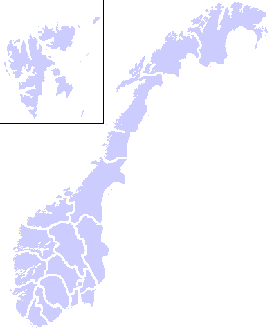
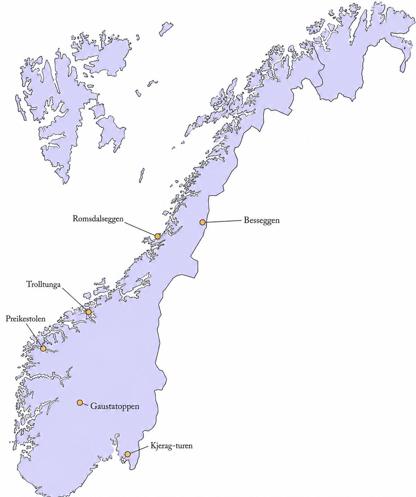
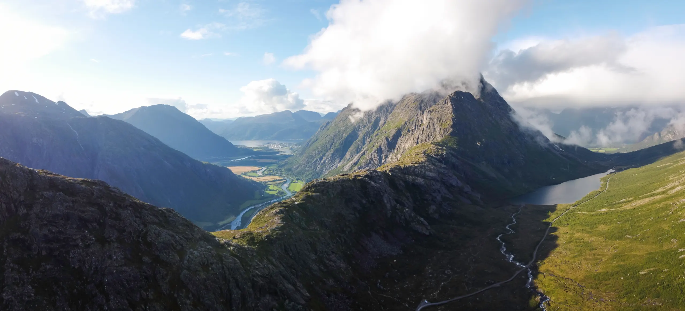

Fjellturer i Norge
Norske fjellturer er populære fordi de gir fantastisk natur og frisk luft. Mange liker å gå i fjellet for å oppleve vakre utsikter, stillhet og følelsen av frihet.
Populære fjellturer i Norge
Fottur til Kjerag

Kjerag rager 1084 meter over havet og er Lysefjordens høyeste fjelltopp. Herfra kan du ta bilde av Kjeragbolten og nyte utsikten fra fjellplatået. Kjerag er også et populært mål for basehoppere og fjellklatrere.
Besseggen

Besseggen er en av Norges mest kjente fjellturer. Hvert år vandrer rundt 60 000 turister opp eggen, som byr på fantastisk utsikt. Besseggen ligger øst i Jotunheimen. Det fine med å gå på en egg, er at du ikke trenger å gå opp og ned den samme ruten.
Gaustatoppen

Gaustatoppen byr på en av landets flotteste fotturer. Vel oppe har du utsikt over «halve» Sør-Norge. Ønsker du ikke å gå hele veien opp, eller ned igjen, kan du haike med Nord-Europas mest unike kabelbane, som går på innsiden av fjellet.

Preikestolen

Preikestolen er et fjellplatå på nordsiden av Lysefjorden i Strand kommune i Rogaland. Preikestolen er et tilnærmet flatt fjellplatå, ca. 25 × 25 m og har et loddrett stup 604 meter ned til Lysefjorden. Preikestolen er et av de mest populære turistmål i Ryfylke-regionen og i Norge.
Trolltunga

Trolltunga er et fjellutspring på 1100 moh., rundt 700 meter over Ringedalsvatnet, i Skjeggedal ved Tyssedal i Ullensvang kommune, Vestland fylke. Fjellformasjonen har, på grunn av oppsiktsvekkende bilder delt på internett fra rundt 2010 tiltrukket seg et stort antall besøkende.
Romsdalseggen

Romsdalseggen er en fjellrygg mellom Venjesdalen og Åndalsnes i Rauma kommune i Møre og Romsdal. Fjellryggen består av flere fjelltopper nederst i Romsdalen. Den er tilgjengelig fra Venjesdalen, Isfjorden og Åndalsnes. Romsdalseggen er ca. 10 km lang.